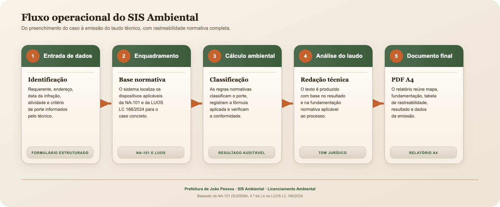
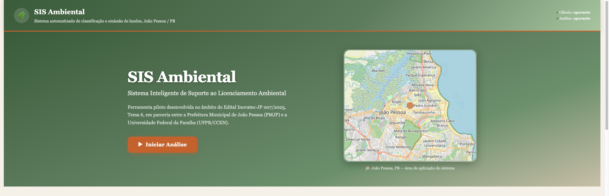
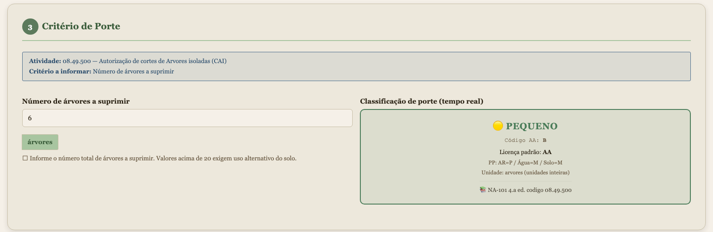
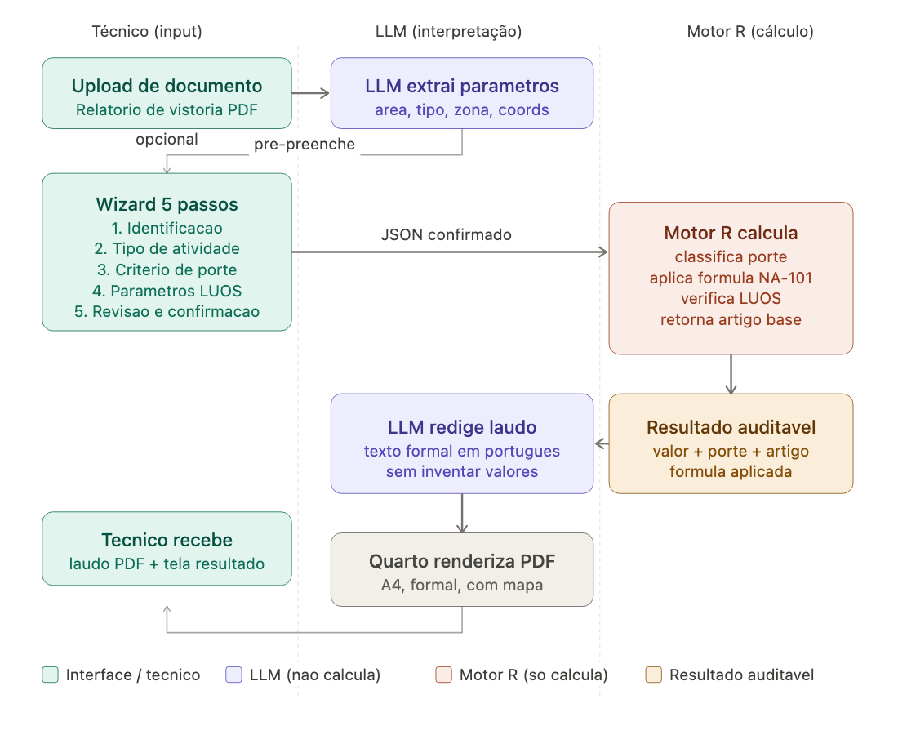

Inteligência Artificial para Automatização de Cálculos no Licenciamento Ambiental
Tema 6 (Licenciamento ambiental) do Edital N.º 007/2025, INOVATEC - JP
Apresentador: Prof. Dr. Joácio de Araujo Morais Junior
Coordenador: Prof. Dr. Pedro Rafael D. Marinho
Universidade Federal da Paraíba - UFPB
Junho de 2026
Parceria
Inovatec + UFPB
Licenciamento Ambiental + Inteligência Artificial
🌍🌊💧🌲🪵🌱
Equipe
Equipe multidisciplinar com experiência em estatística, computação, ciência de dados e projetos aplicados.
🌍 Contexto
- 🌱 Demanda crescente: aumento expressivo de solicitações de licenciamento em João Pessoa.
- ⚖️ Exigência legal: cumprimento rigoroso da LUOS (Lei 166/2024) e da NA-101/Sudema.
- 🔎 Complexidade: múltiplas etapas técnicas e jurídicas envolvidas.
- 💡 Oportunidade: uso de tecnologia para tornar os cálculos mais padronizados, auditáveis e rastreáveis.
📜 LUOS define zoneamento urbano; NA-101 detalha parâmetros técnicos para licenciamento ambiental.
⚠️ Problema
- 📑 Burocracia → excesso de papéis e etapas manuais.
- 🕒 Tempo → processos podem demandar semanas ou meses, conforme a complexidade.
- 🧮 Inconsistências → cálculos manuais, suscetíveis a inconsistências.
- ⚖️ Interpretação técnica → casos limítrofes exigem critérios consistentes e documentados.
- 🔒 Falta de transparência → gera insegurança para órgãos e empreendedores.
- 🌍 Impacto direto: menor previsibilidade para órgãos públicos, técnicos e empreendedores.
Pontos críticos do licenciamento: entrada manual • tempo de análise • consistência dos cálculos rastreabilidade • previsibilidade para órgãos e empreendedores.
O tema já é debatido em outros estados brasileiros
Minas Gerais: licenciamento ambiental e IA.
Santa Catarina: seminário técnico sobre IA no licenciamento.
Amazonas: modernização da gestão ambiental.
Goiás: debate sobre IA no licenciamento.
🎯 Objetivo Geral
- Desenvolver, implementar e testar um protótipo de sistema com apoio de IA para apoiar:
- 📑 Cálculos técnicos do licenciamento ambiental
- ⚖️ Verificação de atendimento às regras da LUOS e da NA-101
- Para dar segurança ao uso, o protótipo já separa:
- 🧮 cálculos normativos no módulo de cálculo em R
- 🔎 consulta às normas e apoio à redação pelo modelo de linguagem
- 📄 relatório técnico em PDF montado com Quarto
📝 Objetivos Específicos
- ✅ Estruturar as regras da LUOS e da NA-101 em bases organizadas para consulta pelo sistema.
- ✅ Criar serviços de conexão entre a interface, o cálculo e a geração do laudo.
- ✅ Desenvolver uma aplicação web em Shiny com formulário guiado em etapas.
- 🧪 Validar a aplicação com a área técnica e com casos reais.
- 📢 Preparar documentação, demonstrações e materiais para divulgação técnica.
O que já foi construído
Implementado
Tela web em Shiny
Formulário guiado para identificação, atividade, porte, localização e revisão.
Implementado
Módulo de cálculo em R
Serviço em R que calcula porte, custos e registra a regra normativa usada.
Implementado
Serviço coordenador em Python
Organiza leitura dos dados, consulta às normas, cálculo e redação do laudo.
Em teste
Consulta assistida às normas
Usa textos estruturados da LUOS e da NA-101 para fundamentar respostas.
Implementado
Relatório em PDF
Modelo em Quarto que monta laudo técnico com dados rastreáveis.
Como as partes do sistema se conectam
- Interface: coleta dados e guia o técnico pelo fluxo.
- Serviço coordenador: liga leitura dos dados, consulta às normas, cálculo e redação.
- Módulo de cálculo em R: executa os cálculos normativos.
- Quarto: monta o laudo técnico em PDF.
- Ambiente de teste: mantém os serviços funcionando juntos.
A IA apoia a consulta e a redação. Os números são calculados pelo módulo em R.

Interface web em operação
- Tela inicial com identidade do SIS Ambiental.
- Mapa de João Pessoa integrado à entrada do processo.
- Indicadores mostram se cálculo e análise estão disponíveis.
- Preenchimento por campos definidos, reduzindo texto livre.
- Arquivos PDF/TXT podem ajudar no preenchimento inicial.

Preenchimento guiado e cálculo conferível

- Escolha da atividade em níveis, conforme a NA-101.
- O formulário muda conforme a atividade escolhida.
- O módulo em R calcula o porte durante o preenchimento.
- A IA não faz os cálculos numéricos.
- Resultado mostra código da atividade, tipo de licença e artigo usado.
Relatório técnico e próximas validações
- O sistema já gera um laudo em PDF usando Quarto.
- O relatório reúne identificação, localização, enquadramento e resultado.
- O laudo inclui as regras usadas como fundamento técnico.
- A próxima etapa é testar com casos reais da área técnica.
- Métricas de prazo e ganho operacional só devem ser afirmadas após validação.

Como funciona o sistema hoje?
🖥️🌐
Clique 🖱️AQUI
🖥️🌐
Clique 🖱️AQUI
📅 Situação das atividades em junho de 2026
Início das atividades: 15 de setembro de 2025.
| Frente | Situação atual | Mensagem para apresentação |
|---|---|---|
| LUOS e NA-101 | Organizadas | Regras prontas para consulta e cálculo |
| Cálculo em R | Implementado e em teste | O módulo faz os números, sem depender da IA |
| Coordenação do fluxo | Implementada | Liga dados, normas, cálculo e laudo |
| Tela web | Em operação | Formulário guiado com mapa |
| Laudo e validação | PDF implementado; validação em andamento | Testes com casos reais continuam |
Resultados em validação
- 🧮 Cálculos conferíveis com artigo, fórmula e valor calculado
- 📑 Entrada padronizada por formulário guiado, com escolha da atividade por níveis
- 🔍 Transparência técnica por relatórios que mostram a origem das informações
- ⚖️ Validação jurídica e técnica ainda depende da área responsável
- 🌍 Uso institucional deve ser consolidado após testes com casos reais
Ações realizadas até junho de 2026
Início das atividades: 15 de setembro de 2025.
Principais avanços técnicos:
- 🧾 Base normativa organizada: LUOS e NA-101 preparadas para consulta e cálculo.
- 🧮 Módulo de cálculo em R implementado: regras fixas para enquadramento e conferência.
- 🔌 Fluxo integrado em operação: liga cálculo, consulta às normas e laudo em PDF.
- 💻 Tela web em Shiny criada: formulário guiado com mapa, atividade, porte, localização e revisão.
- 🧪 Validação em andamento: próximos testes dependem da área técnica e de casos reais.